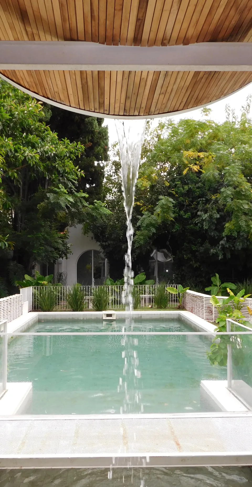
Martes a domingo de 8 a 21
Simbrón 3323 · Villa del Parque
El café escondido de Villa del Parque
Entrás por un pasaje de plantas y aparece un jardín con pileta, techos de madera y una barra roja. Desayunos, meriendas y pastelería, con opciones sin TACC.
- Mar a dom · 8 a 21
- No reservamos
- Pet friendly afuera
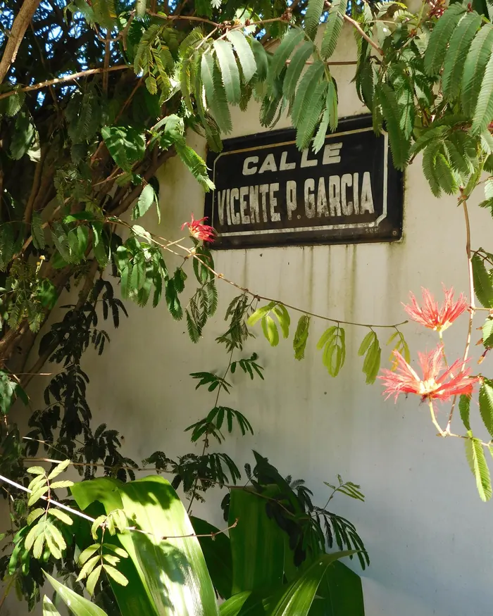
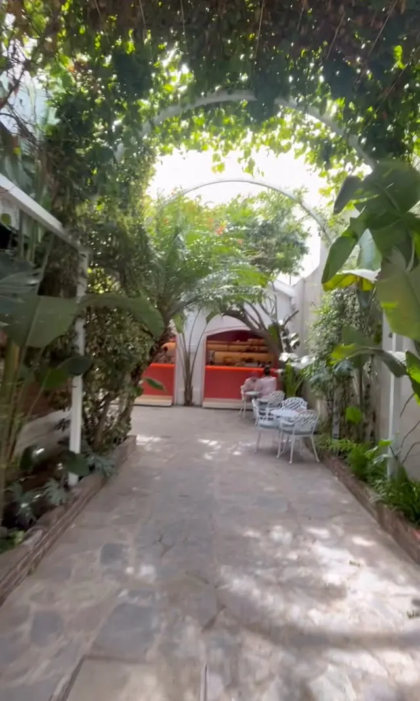
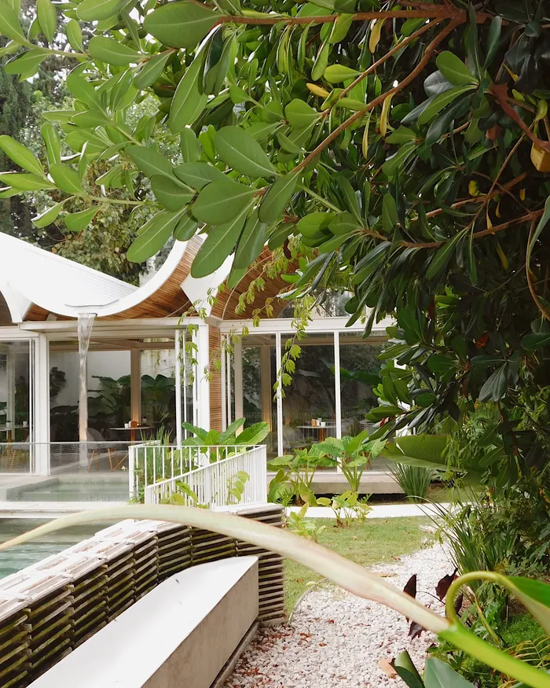
Para tomar acá o llevar
La carta
Pedí para retirar y pasá a buscarlo.
Precios de la carta de junio. Para la versión sin TACC, avisanos al pedir.
Agenda
Lo que se viene en el jardín
Noches de jazz, menús especiales y días distintos. Lo anunciamos acá y en Instagram.
Próximamente
Almuerzos en el jardín
Cocina casera, pastas, ensaladas y entre panes. Muy pronto, al mediodía.
Enterate en @bienetrecafeEl jardín
Te olvidás de que estás en la ciudad
Techos de madera que ondulan, una pileta con cascada, monsteras por todos lados y una barra roja que de noche se prende.
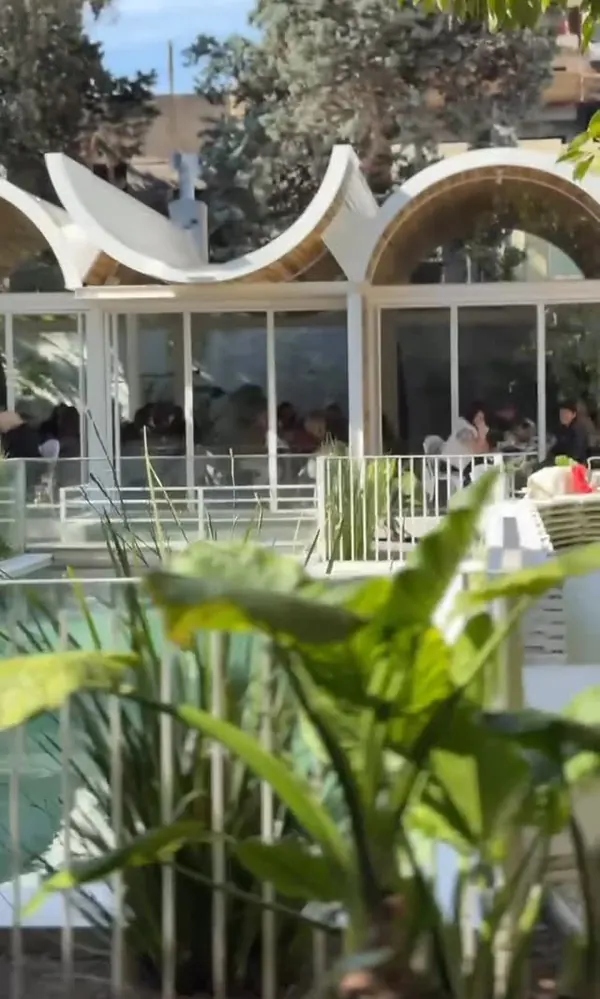
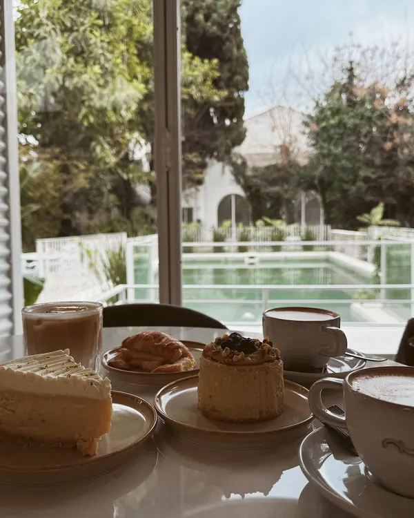
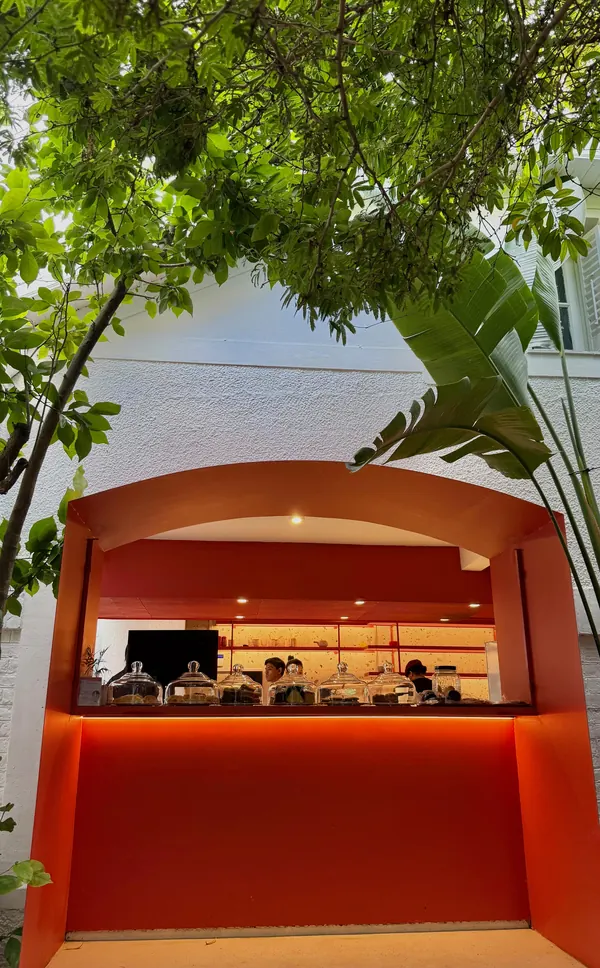
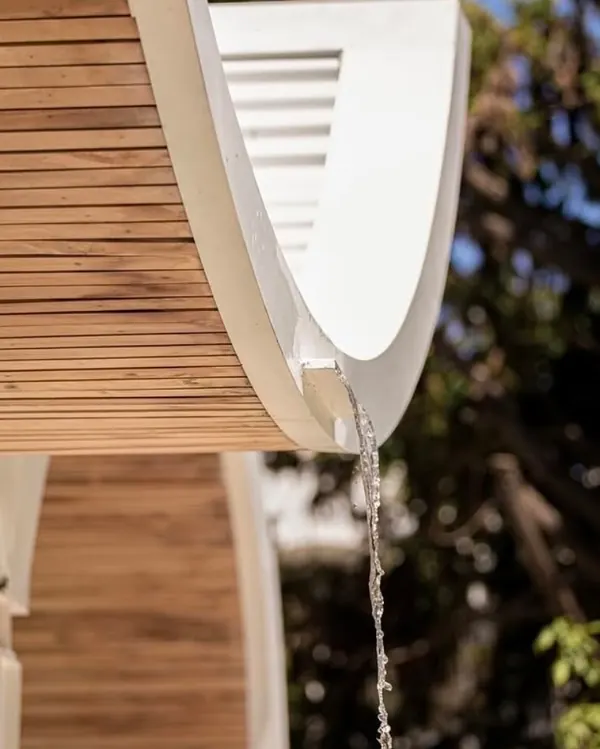
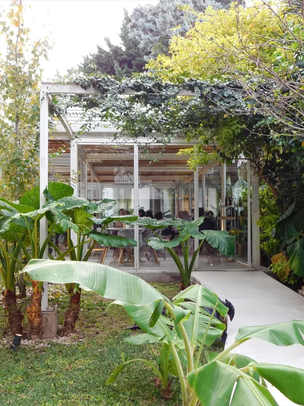
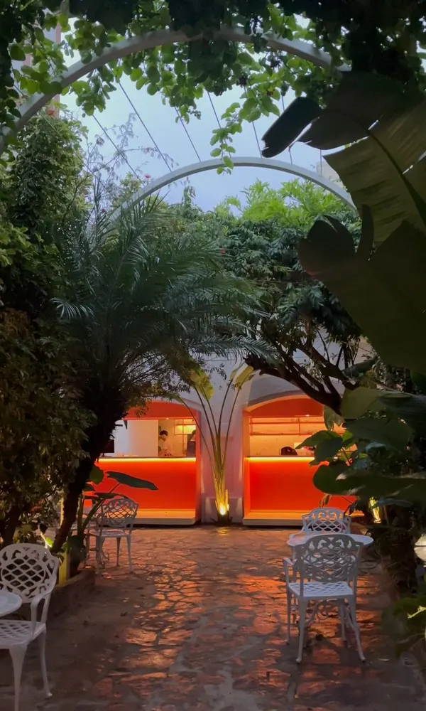
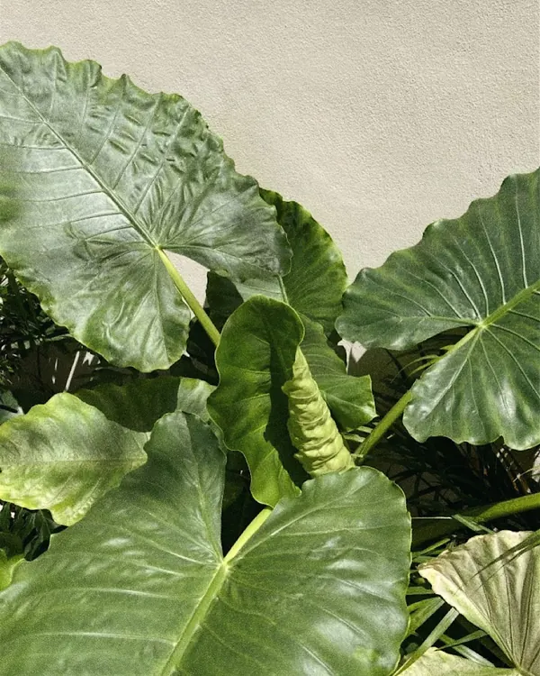
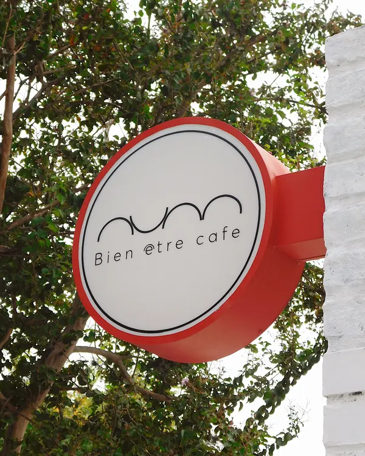
Para que sepas
Las reglas de la casa
No reservamos
Vení cuando quieras: siempre hay un rincón en el jardín o en la barra.
Pet friendly
Tu perro es bienvenido en el exterior.
Sin TACC y veggie
Hay opciones marcadas en la carta. Avisanos que querés la versión sin TACC.
Efectivo con descuento
20% off de martes a viernes y 15% los fines de semana y feriados.
Visitanos
Simbrón 3323
Villa del Parque, Ciudad de Buenos Aires. Buscá el pasaje de plantas: el jardín está al fondo.